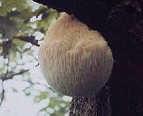
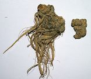

こんな人にお奨め！
☆糖尿病でお困りの方
☆口内炎でお困りの方
☆肝機能障害でお困りの方
最近栄養過多、運動不足で肥満になり、糖尿病が増えています。
糖尿病は腎臓や心臓にも大きな悪影響を及ぼしますので早期予防が大切です。
肝臓障害の改善に！
何故天恵乃華はいいのか？→ 天然成分１００％
βグルカンとジンセノサイドで細胞力ＵＰ！
|  | ヤマブシ茸 他のキノコに見られない高いSOD様値を持っており、更にβグルカンを初めとする多糖類やアミノ酸など多くの有用成分を含んでいます。 このたび当社使用のヤマブシ茸は 糖尿病予防改善剤として特許が認められました！ |
|  | 古来副作用の無いものとされ、漢方では「上薬」として知られています。 有効成分： ①ジンセノサイド（ginsenoside) ニンジンサポニンと呼ばれ、高麗ニンジンの４倍も含まれています。 ② デンシチン 栄養成分表示（50ｇあたり） 糖質 25.2ｇ タンパク質 14.0ｇ 食物繊維 8.4ｇ 脂質 3.2ｇ 灰分 4ｇ β-グルカン 4860ｍｇ ジンセノサイド 2370ｍｇ 亜鉛 3ｍｇ ナトリウム 0.6ｍｇ |
＜使用方法＞
１回１ｇ（１包）を1日３回（目安）
＜使用上の注意＞
● 疾病などで治療中又は妊娠中の方は事前に医師に相談してください
● 体質に合わないと思われる場合や異常を感じた場合は直ちに使用を中止してください
商品情報
品名 てんけいのはな ５０ｇ（１ｇ×50包）
名称 田七人参、山伏茸加工食品
原材料名 田七人参、山伏茸粉末
原産国 山伏茸（日本）田七人参（中国）
保存方法 袋のチャックシールをしっかり閉め、冷暗所に保存
お申し込み
下記からお申込ください。
天恵乃華 価格 \9,800 (税込み）全国どこでも送料無料
代金引換で１週間から10日でお送りします。
■会社概要
| サイト名 | 天恵 |
| 名 称 | ミラクルジャパン株式会社 天恵事業部 |
| 会 社 設 立 | 平成7年11月27日 |
| 代 表 | 代表取締役 佐藤 義之 |
| 資 本 金 | 1250万円 |
| 主要取引先 | ㈱市川三幸社、㈲日善貿易 |
| 所 在 地 | 〒540-0038 大阪市中央区内淡路町１－１－５－４０３ TEL ： 06-6945-1377 FAX ： 06-6945-1378 |
■特定商取引法に基づく表示
各商品をご注文される際に、注文フォームにてご確認ください。
代金引換の手数料は無料です。
申込み有効期限 制限事項のあるものは各商品ページに記載
販売数量 お問いあわせによりメールにてご案内
問い合わせフォーム
引渡し時期 申込み後１週間程度でご送付させていただきます。
※万一在庫切れのためお届けが遅れる場合は、当社からその旨をご連絡させていただきます。
お支払い方法 代金引換
返品・交換 商品到着後７日以内にお申し出ください。次の場合は着払いでご返送ください。
◎注文したものと違う
◎配達途中での破損品 。
次の場合の返品・交換はできません。
◎一度使用された商品
◎お客様の都合で傷、破損が生じた商品
■プライバシーポリシー（個人情報保護方針）
1.個人情報の収集
お客様に本サイトのサービスをご利用いただくために、その利用目的をご確認いただいた上で、個人情報（氏名、住所、電話番号、電子メールアドレス等の、個人を特定することができる情報）をご登録いただいております。
お客様から収集させていただいた個人情報は、不正アクセスや紛失、破壊、及び漏洩等が起きぬよう、弊社で厳重に管理いたします。
2.個人情報の利用方法について
ご登録いただいた個人情報は、弊社から良いサービスを提供するために利用しています。
お届け、ご請求の対応、電子メールでの情報提供、ニュースレター、各種キャンペーンのご案内などの目的で使用いたします。
３．Cookieの使用使用
お客様が当サイトにアクセスされる際、「Cookie（クッキー）」を使用してお客様のコンピュータを識別します。
Cookie（クッキー）は、お客様が当サイトでお買い物をされる際、より便利にご利用いただくために使用しております。
プライバシーを侵害するものではなく、またお客様のコンピューターに悪影響を及ぼすことはありません。
4.個人情報の開示・提供
ご登録いただいた個人情報は厳重に管理され、以下の場合を除き、登録いただいたご本人の了承なく第三者に開示することはありません。
サイト上の行為が第三者に不利益を及ぼすと当社が判断した場合情報交換も含まれます。
検察庁、警察、これらに順ずる公的機関から要請された場合、生命、身体及び財産等に対する差し迫った危険があり、緊急の必要性が場合
５．個人情報の安全性
お客さまの情報をいただく際のセキュリティのために、当サイトではSSL（Secure Socket Layer）というソフトウェアを使い、入力された情報を自動的に暗号化します。
個人情報を扱うページすべてにSSLを適用し（cookieについてもSSLにより情報を暗号化しています）、情報の保護に努めます。
6.個人情報の確認・訂正・削除について
お客様が、弊社にご提供いただいた個人情報は、その内容の確認および変更・削除などを希望される場合には、意思を尊重し、合理的な範囲で対応をいただきます。
7.お問い合わせ
プライバシー・ポリシーに関するお問い合わせは info@ までお願いいたします。
ご本人のお問い合わせに合理的な範囲で対応いたします。